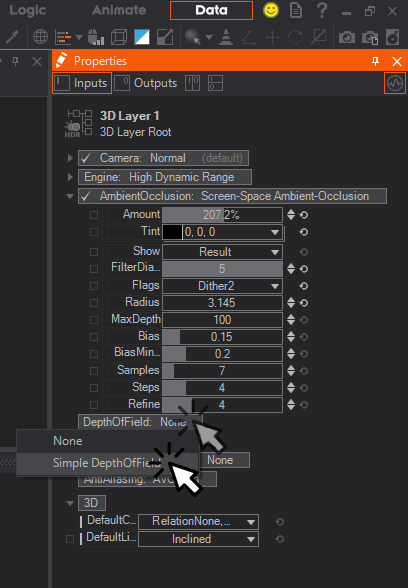

Layer 3D
| 3D Standard | This is a standard 3D Layer | |
| 3D HDR | This is a Layer using the High Dynamic Range engine mode |
3D Layers
3D Layers allow you to access the Ventuz Hierarchy workflow, and thus the Hierarchy Editor in Ventuz.
3D layers are 3D hierarchies which can be combined with 2D layers and which support the addition of Post Processing Effects, also called IPP Effects. These IPP Effects will affect all the elements inside the 3D Layer as a whole, therefore if you want to apply different effects to different part of your scene, you have to place these elements into separate 3D Layers.
To access the Ventuz Hierarchy Editor for each 3D Layer, click the Edit Icon of the layer you want to edit. Please refer to the Hierarchy Editor section of this User Guide for further reference.
Ventuz 3D layers have 3 different render engines or modes:
- Legacy: This engine mode essentially emulates the Ventuz 4 engine within the current engine, to provide backwards compatibility with scenes created in Legacy versions of Ventuz. Previous versions of Ventuz render engine have used a fixed function based vertex-based lighting model. They also had different ways of accessing the 3D world, cameras and materials.
- Standard: This is the default render mode used in Ventuz 5 and, as you can see, it is not using vertex-based lighting and therefore is more similar to industry standard 3D applications using other lighting techniques. As with legacy mode, the properties change to match the available features of this render/lighting mode.
- Standard with legacy Lighting: This mode is halfway between the legacy and standard modes. It allows the use of some of the new effects, materials and possibilities of the engine, while retaining the lighting model from Ventuz 4 and earlier.
- HDR: This can be considered an advanced version of the Standard mode, which uses High Dynamic Range (HDR) computing. This mode calculates at more than 8/10 bits of information per color channel to render the final results. This requires more computing power, but it provides the means to create much more powerful and higher quality effects. As you can imagine, there must be a compromise between performance and quality, meaning that you should only use the HDR engine where it actually provides a benefit.
Common Layer Properties
All layers in Ventuz feature certain properties to control how layers are sized, composited, used masks, applied effects and so on, regardless if they are 2D, 3D or other types of layers. You can find an in-depth description of all these options on this page, for references about the different types of layers in Ventuz and their specific properties, check 2D Layers, 3D Layers and Other layers.
Blending
Blending operations, including modes, opacity and masking, can be switched ON or OFF for each individual layer by left-clicking close to the Blending caption. If the check mark appears, the blending operation, including opacity, mode and mask, is calculated for the current layer. If the check mark does not appear in front of the Blending options, the blending operations are not calculated.
As with all Layer Properties, in order to expand the Blending Options, click on the little arrow. A dropdown list of the supported blending modes will appear:
With the Blending Modes you control how the pixel values of the current layer are combined with those of the layers rendered before, i.e. the layers which are above the current layer.
Mode
Normal: The default Blending mode. When selected, only Layer Opacity settings are taken into account to composite the layer.
Darken: Compares the color information in both the current and the layer below and selects the darker pixels. Pixels lighter than the blend color are replaced, and pixels darker than the blend color do not change.
Multiply: Checks the color information and multiplies its values in both the upper foreground and the background layer. The resulting color is always a darker color. Multiplying any color with black produces black. Multiplying any color with white leaves the color unchanged. When you’re blending with a color other than black or white, successive blends produce progressively darker colors. The effect is similar to drawing on the image with multiple marking pens.
Color Burn: Looks at the color information in each channel and darkens the base color to reflect the blend color by increasing the contrast between the two. Blending with white produces no change.
Linear Burn: Looks at the color information in each channel and darkens the base color to reflect the blend color by decreasing the brightness. Blending with white produces no change.
Darker Color: Compares the total of all channel values for the blend and base color and displays the lower value color. Darker Color does not produce a third color, which can result from the Darken blend because it chooses the lowest channel values from both the base and the blend color to create the resulting color.
Lighten: Looks at the color information in each channel and selects the base or blend color —whichever is lighter— as the resulting color. Pixels darker than the blend color are replaced, and pixels lighter than the blend color do not change.
Screen: Looks at each channel’s color information and multiplies the inverse of the blend and base colors. The resulting color is always a lighter color. Screening with black leaves the color unchanged. Screening with white produces white. The effect is similar to projecting multiple photographic slides on top of each other.
Color Dodge: Looks at the color information in each channel and brightens the base color to reflect the blend color by decreasing contrast between the two. Blending with black produces no change.
Linear Dodge (Add): Looks at the color information in each channel and brightens the base color to reflect the blend color by decreasing contrast between the two. Blending with black produces no change.
Lighter Color: Compares the total of all channel values for the blend and base color and displays the higher value color. Lighter Color does not produce a third color, which can result from the Lighten blend because it chooses the highest channel values from both the base and blend color to create the resulting color.
Overlay: Multiplies or screens the colors, depending on the base color. Patterns or color overlays the existing pixels while preserving the highlights and shadows of the base color. The base color is not replaced but mixed with the blending color to reflect the lightness or darkness of the original color.
Soft Light: Darkens or lightens the colors, depending on the blending color. The effect is similar to shining a diffused spotlight on the image. If the blend color (light source) is lighter than 50% gray, the image is lightened as if it were dodged. If the blend color is darker than 50% gray, the image is darkened as if it were burned in. Blending with pure black or white produces a distinctly darker or lighter area, but does not result in pure black or white.
Hard Light: Multiplies or screens the colors, depending on the blending color. The effect is similar to shining a harsh spotlight on the image. If the blend color (light source) is lighter than 50% gray, the image is lightened, as if it were screened. This is useful for adding highlights to an image. If the blend color is darker than 50% gray, the image is darkened, as if it were multiplied. This is useful for adding shadows to an image. Blending with pure black or white results in pure black or white.
Vivid Light: Burns or dodges the colors by increasing or decreasing the contrast, depending on the blend color. If the blend color (light source) is lighter than 50% gray, the image is lightened by decreasing the contrast. If the blend color is darker than 50% gray, the image is darkened by increasing the contrast.
Pin Light: Replaces the colors, depending on the blend color. If the blend color (light source) is lighter than 50% gray, pixels darker than the blend color are replaced, and pixels lighter than the blend color do not change. If the blend color is darker than 50% gray, pixels lighter than the blend color are replaced, and pixels darker than the blend color do not change. This is useful for adding special effects to an image.
Hard Mix: Adds the red, green and blue channel values of the blend color to the RGB values of the base color. If the resulting sum for a channel is 255 or greater, it receives a value of 255; if less than 255, a value of 0. Therefore, all blended pixels have red, green, and blue channel values of either 0 or 255. This changes all pixels to primary additive colors (red, green, or blue), white, or black.
Difference: Looks at the color information in each channel and subtracts either the blend color from the base color or the base color from the blend color, depending on which has the greater brightness value. Blending with white inverts the base color values; blending with black produces no change.
Exclusion: Creates an effect similar to but lower in contrast than the Difference mode. Blending with white inverts the base color values. Blending with black produces no change.
Subtract: Looks at the color information in each channel and subtracts the blend color from the base color. In 8- and 16-bit images, any resulting negative values are clipped to zero.
Divide: Looks at the color information in each channel and divides the blend color from the base color.
Hue: Keeps the Hue of the layer, and blends the luminance and saturation of the underlying layers (you basically get the image from the lower layer with the colors of the top layer).
Saturation: Keeps the saturation of the layer, and blends the luminosity and hue from the underlying layers—where colors from the active layer are saturated, they will appear using the luminosity and hue from the underlying layers.
Color: Keeps the color of the layer, and blends the hue and saturation (the color) of the active layer with the luminance of the lower layers.
Luminosity: Keeps the luminance of the layer, and blends it with hue and saturation of the layers below.
Linear Light: Uses a combination of the Linear Dodge blend mode on the lighter pixels, and the Linear Burn blend mode on the darker pixels.
Pass Through: Is the default Blend Mode for Layer Groups. It allows any adjustments to layers inside the group to affect layers below it. Ventuz takes all the layers inside the Group and performs the blending operations in the usual order - if you change this mode you are basically changing the order in which the layers are processed - all layers inside the group are blended first and the resulting composite is blended with the layers below with the selected blending mode for the group.
Blend mode Pass Trough applies only to Layer Groups!
Texture is not pre-multiplied: This setting forces an internal pre-multiplication of textures in certain image formats, mainly DDS when it is difficult to automatically decide if the file is pre-multiplied or not.
Opacity
Control the overall Opacity of the Layer. This value is already exposed to the Layer Level.
Blocked
This checkbox controls if the Layer Blending mode operation is performed or not, the main difference with switching OFF Blending operations is that the property can be bound in the Content Editor, and therefore can be used to optimize performance in complex scenes.
BlockedOnFullTransparency
This checkbox is used to optimize layer performance when animating Layer Opacity, if opacity is set to 0%, and is, therefore, invisible, Ventuz will minimize any calculations pertaining to this layer to improve performance. If you Uncheck BlockedOnFullTransparency to still have touch interactions possible. For instance, you could have a Transparent 2D Layer which shrunk in size and can still send touch information.
Layer Mask
Layer Masks allow isolating certain parts of the layer to be used for the final composite. In general, Masks use the color or alpha information to decide which image pixels will be transparent, translucent or opaque.
- Pixels which are 100% white in the selected channel will result in opaque areas of the layer.
- On the contrary, pixels which are 100% black in the selected mask channel will be considered as transparent and therefore these areas of the current layer won't be shown in the final composite.
- All the gray tones between black and white in the selected mask channel will result in different levels of translucency in the areas affected.
Ventuz features three type of masks by default: Mask, Vignette and Border. You can add as many MaskStages as you want.
You add a LayerMask if you click Click on the [+] Mask like shown on the Screenshot, and select Mask or any type of Mask Vignette / Mask Border from the dropdown menu.
Mask
Mask Property uses a texture source as the mask. When adding a mask, a new thumbnail will show the Mask appearance. Click on the Mask or click the triangle in the front to bring up the properties for the selected Layer Mask.
Each one of the Texture Source property groups provide a texture to the containing node that is used in one way or another. This page gives an overview of the different types of property groups.
Texture Loader
The Texture Loader directly loads a texture of any supported type from file and provides it as a texture to the containing node. The File property changes the loaded image. The Hint property will change how the loaded file is handled internally while the texture is generated. See Texture Loader Node for more information on the Gamma and Alpha Hints used when loading a texture.
The Presets of this Node are specific internal Texture Files that are always available in the Ventuz Runtime.
Loader
These images can be used for several different general purposes like generic textures or placeholders and testing.
|
|
|
|
|
|
|
|
|
| ||
|
|
|
| ||
|
|
|
| ||
|
|
|
| ||
|
|
|
| ||
|
|
|
| ||
|
|
|
| ||
|
|
|
| ||
|
|
|
| ||
|
| ||||


IPP
These images are intended to be used by Ventuz' Image Post Processing Effects, e.g. the Lensflare effect.
|
|
|
|
|
|
|
|
|
| ||
|
| ||||


Lighting and Shaders
These images are best used by texture based Lighting Models and specific shaders, like e.g. the Incidence Lighting Model or the Hatch Texture Node.
Lighting
|
|
|
|
|
|
|
|
|
| ||
|
|
|
| ||
|
|
|
| ||
|
|
|
| ||
|
|
|
| ||


Shaders
|
|
|
|
|
|
|
|
|
| ||
|
| ||||


Texture Property
The Texture Property Property Group provides only an Input for any Texture coming from the scenes logic, e.g. a Texture Loader Node. This is necessary for some source types like movies but may also be useful whenever you need to apply some logic to loaded textures before applying them to objects. The Presets generate the according Content Node together with the Property Group and bind its Input Property to that new node.
1D Gradient
The 1D Gradient generates a linear gradient. It can be edited using the Gradient Input - clicking on the down arrow on the left of the property will open up the Gradient Editor. The Vertical flag changes the alignment of the generated 1D gradient.
SVG Loader and SVG Text
The SVG Loader and SVG Text Property Groups rasterize an SVG file and provide the rasterized graphic. See the SVG Loader Node for more information.
Other
The images in this category are defaults for other kinds of texture usages, like the rasterization of SVG Files.
|
|
|
|
| |

Texture Array Loaders
The Texture Array Loaders are able to generate a List of Textures instead of only a single texture. This can be used by a Material with a Flipbook Control to display one of the loaded textures after another. Or you can use it with a Particle System to display a different texture for each particle using the Animation attribute of a particle.
Flipbook Loader
The Flipbook Loader is able to generate an Array of Textures from the given source file. This can either be a Movie file or an Image Sequence. For best results and performance, consider the following:
- The Movie file is loaded into the GPU memory completely instead of streaming only the needed portions like the Movie Clip Node. So always use small movie files. Also remember that compression does not change the size on the GPU since it will be decoded before.
- The Movie file should not use lossy compression to make sure each frame looks fine and can be used on its own. E.g. the Apple Animation Codec for Quicktime files could be used for that.
- An Image sequence can be loaded by selecting one of the images of the sequence. They have to have the same names with an index at the end of the name. For example PictureXXX.png with XXX being the index of that image.
- The Images in the given sequence need to be of the same dimensions. Otherwise the GPU cannot create a Texture Array of the given source files.
Strip Loader
Similar to the Flipbook Loader the Strip Loader will create an Array of Textures. This texture loader divides a single Image into evenly sized textures. You can define the number of textures with the CountX and Y properties and remove single slots at the end with the Reduce property. The frames are read line by line, so the first frame is at the top-left slot and the second frame is at the slot right to that.
It is used similarly to the 2D Strip Mapper of the Material Node. The difference is that the Strip Loader can be used by the Particle System to use different portions of an Image for each particle.
Flipbook
The images in this category can be used by the Flipbook Loaders.
|
|
|
|
| |

For any of the above loaders, you can adjust the Amount which controls the Mask Opacity, the Sampler where you can select the filtering to be Trilinear and Adress the Border behavior. Click the Sampler and the Dropdown Menu offers you following Options for the Border Behavior:
Black: The pixels outside the area covered by the mask are turned black, meaning that there is no tiling.
White: The pixels outside the area covered by the mask are turned white, meaning that the area outside the original mask image is totally opaque.
Clamp: The pixels outside the area covered by the mask will repeat endlessly the same values as the pixels in the original image borders.
Wrap: The pixels outside the area covered by the mask are repeated or tiled as they were in the original mask image.
Mirror: The pixels outside the area covered by the mask are repeated or tiled as they were in the original mask image, but inverted like a mirror effect.
With the Channel Drop Down Menu you can select which channel should be taken for masking. The Luma (L) is the default and uses the external image Luminance as a mask, it converts the image internally into a Grayscale Image. You can select an explicit channel like R,G,B or take the Alpha as the Making source. With the Invert the source image or selected channel gets inverted.
You can Offset X/Y, Scale X/Y and change the Rotation of the mask. New pixel values are interpolated using the options selected in the Sampler dropdown menu.
The Lift, Gain and Offset can be used to do a color grading for the Mask. The values are conformed with the Standards used in the cinematography. Lift can lift up the lower colors, while it clamps also the lower color area. E.g. if you lift a dark image, lower colors gets cut off, instead of starting at 0-255, it will start with 30-255. Gain boosts the colors in the whole range, while bright pixels may also clip at 255. Offset moves the colors in respect to each other color values. It behaves like a shifting.
Random will position the Image randomly on screen and the amount of this randomness can be controlled with the Random X/Y. The Image will be positioned to a different position for every Tick, therefore you can not control the speed.
Mask Vignette

Mask Vignette can be used to darken the corners of the Layer. You can control the Radius and Fuzz to change the appearance of the vignette. Fuzz will change the blending between the dark vignette and the visible area. You can reposition with the Center X/Y values and also use Straight X/Y to change the shape of the vignette. The Straight can be used to shape the circle like vignette to a rounded rectangular shape. With the AspectStretch and Aspect value you squeeze or stretch the vignette.
Horizontal Vignette and Vertical Vignette offer the same controls as the Standard Mask. They are more like presets and have just the properties adjusted, so that either a Horizontal- or Vertical Vignette appears. The adjusted Values, in this case, are Radius, Fuzz and depending on Straight X or Straight Y.
Mask Border
Mask Border creates a rectangular border vignette which can be controlled and adjusted the same way as the Standard Vignette. The main difference is the Border X/Y controls. These control the border width. You will notice that you control the rounding of the border with the Radius value.
Round 2% and Square 2% are again just like presets, which have the Border X/Y set at 2% and either Radius and Fuzz set at a value or not.
Layout
The Layout parameters adjust the layer size, aspect and position. The layout can work in different ways, also called modes, each features its own properties.
Full Size keeps the Layer size always to the project settings. Switch to the Percentage if you want to adjust the Layer Size and Position in percent. For example: This mode is the fastest way to bring a Layer on-screen and off-screen, since you just need to bind the X/Y values, and animate them.
Pixels will switch the layer to be pixel accurate. Per default, it will use the Project Settings. If you started your Project in FullHD it will reflect 1920x1080. The X/Y changes the on-screen position in Pixels, keep in mind that the position is dependent on the Relation Alignment. As soon as you change the Width/Height the layer will have the set size. In the Relation dropdown you can define in which relation the pixel will be. The Relation - Layer will use the pixelspace defined in the layer itself OR if the layer is inside a Layer Group and the Layer Group has a different pixelspace it will be in relation to that Layer Group settings. Relation - Project will use the defined Format of the Project Settings. Relation - Device will use the connected device resolution. E.g. your screen is set to 1920x1080 and you resize the Renderer View the layer will still render as if it will be displayed in FullHD. Resizing the Renderer View will not affect the displayed size of your content in this case. With the Relation - Alignment settings you change the alignment of your layer which also affects the positioning values.
Aspect can be used to redefine the aspect of the Layer independently of the Format which you set in the Project Properties.
Offscreen Render Target renders the whole layer to an internal texture which you can access in the Layer - Output Properties. With the Size dropdown menu you can choose if you want to render the layer internally in Full- Half- or Quater- size. For example a 1920x1080px Layer will be 960x540px if you select Half size here. You can also adjust the internal size manually (Manual). Ventuz has some Presets, e.g. 256x256, 512x512, 1024x1024px ..., and so on. As soon as you select any manual size, you can change these values with the Width/Height to suit your needs. Per default the RenderMode is set to Always which renders the Offscreen Render Target in every frame, you can switch to Render Once, so that the Offscreen Render Target is rendered only one time. You can trigger the RenderNow to have the Offscreen Render Target rendered again. The TouchEnabled property specifies if this Layer should be taken into account by the Touch Input Processing. The only Option left is the MipMaps. If enabled the Layer will automatically create MipMaps from its texture. It consumes some performance but will enhance the quality of the Layer if scaled down.
Effects
For every layer, you can apply different kinds of effects. You can Group effects by creating Effect Groups and assigning individual Blendings and Masks.
Margin will be mostly required if you apply the dropshadow or blur effect. The Margin, which is expressed in percentage relative to the original layer size, adds a border around a nonfull-size layer. That is especially required for effects that affect a greater area than the layer itself.
Blending
Uses the same available modes like for the layer blend modes. Please see Blending modes for layers.
Mask
Uses the same available masks like for the layer masks - the exception is the additional mask self-property. Please see the Layer Masks for an overall detailed explanation.
Mask Self
Mask Self masks the applied effect using the Layer Color information. It renders the effect and applies the Layer itself on top of it. This can be greatly seen with the Crashzoom effect and enabled Mask Self:
If you enable the Show Effect, you will see only the effect and the applied Mask Self is ignored then.
Effect
Click the [+] Effect and add any of the effects listed below. Keep in mind that you can Group Effects! You can change the order of the effect or effect group the same way like you would do with the mask layers - simply click the arrow next to the fx stage or the cross to delete it.
For effect stages you can clone or clone with bindings.To do so Hold Right Click Hold on an effect stage for a second and a menu with these options will show up.
You can collapse or unfold effect properties by simply Right Click click an effect stage.
Effect Group
Creates a group of effects that will be applied together at once. It works exactly the same as the Effects Stack, so the same Effects can be added, moved, deleted and enabled inside of the Group in the same way you operate with the Effects Stack.
Color Correction
These effects are used to correct the color values of the layer. The available Color Correction IPP Effects are Grayscale (simple Grayscale effect), Color Grading (a standard color correction effect working with the RGB primaries), Color Correction (similar to Color Grading, but using the HSL/HSV Color model) and Gain (quick Gain color correction effect).
Please refer to the IPP Color Correction Effects section of the User Manual for additional information.
Filters
These effects filter the pixel values of each layer, changing their position, adding new elements, or even changing the opacity.
The available Filter IPP Effects are:
Mosaic: Creates a set of tiles colored according to the original color values.
Blur: Averages each pixel color values with the surrounding pixel values.
Glare : Creates a smooth halo around the brightest areas of the layer.
Crash Zoom: Is often called "God Rays".
RGB Noise: Adds a video noise-like effect.
Feedback : Creates a trail effect by blending with previous frames.
Posterize RGB: Rounds up/down pixel color values.
Posterize HSV: Posterize effect based on the HSV color mode.
Edge Detection: Detects the outline of shapes in the Layer.
Color Difference Keyer: Used to Key out the green from "green-screen material" - similar to a Chroma Keyer but uses different math.
Please refer to the IPP Filter Effects section of the User Manual for additional information.
Distortion
These IPP Effects work mostly by changing the relative position of pixels in the layer.
The available Filter IPP Effects are:
Drop Shadow: 2D shadow effect based on Layer Alpha.
Lens Distortion: Replicates artifacts created by lens spatial aberrations.
Distortion: A standard distortion effect, combining most of the options available in the rest of IPP distortion effects.
RGB Distortion: Offsets and scales Layer RGB channels individually.
2D Displacement: Displaces the Layer pixels according to the Luminance information of an external file.
Noise Distortion: Uses a randomly animated texture to create a fake Noise Displacement effect.
Polar Distortion: Transposes the x and Y pixel coordinates in the original image to a Polar Coordinate system.
Kaleidoscope Distortion: Kaleidoscope pattern effect.
Please refer to the IPP Distortion Effects section of the User Manual for an overall detailed description.
Layer
These Properties may vary for the different Layer-types. The most common Property is the Orientation Property which makes it possible to Rotate the Layer in any direction or Mirror and Flip it. There are several Layer-specific properties depending on the Layer Type. The Image Layer has Properties like the TextureFile and TextureHint which controls the Gamma and Alpha loading, while for example the Constant Color Layer has a TextureColor Property. As mentioned before, each Layer Type may vary in the Layer Properties.
3D Property
Camera
With this drop-down menu you can assign the actual Camera. The options are Local Camera default and all other Cameras available in the actual Selected Layer, if available, other 3D Layers cameras will be listed here - Right under 3D Layers as shown on the screenshot. It is a very powerful feature of Ventuz to use an existing camera from another 3D layer as the actual camera for the selected layer. Whenever you control, change the position or orientation of the assigned camera, the changes will be applied to the 3d layer, where you assigned the camera to.
3D Layer Root Node
There are several properties available on the 3D Layer Root when using the Standard Render Engine, HDR engine specific properties will be explained at the end of this section.
In order to access the different render modes, click on the Layer Root that appears in the Hierarchy Editor of every 3D Layer. This layer root holds all the render properties of each of the available render mode.
Keep in mind to unfold or open the properties by right clicking on the properties or click the small triangle in front of the properties.
- Camera: A drop-down menu used to select the camera that would be used in that 3D Layer. One powerful feature of Ventuz is that cameras can be shared between 3D layers, allowing an effective combination of 3D compositing and 2D post-processing in the same environment. There are two types of camera options available, with these particular parameters:
- Normal: assigns a separate camera per 3D Layer, the default option that appears on the drop-down menu. Below is the default camera, you can find the rest of the 3D cameras available in the scene - 3D cameras are named accordingly to the 3D Layer they belong to, but can be renamed more usefully instead.
- A/B: This option allows selecting two cameras and blending camera position between them, it is mostly used to make 3D camera transitions between two existing 3D cameras. These properties are available:
- Camera A: A drop-down menu used to select the first 3D camera for the camera transition, initially uses the default camera.
- Camera B: A drop-down menu used to select the second 3D camera for the camera transition, initially uses the default camera.
- Amount: controls the blending between the camera positions. It expresses blending as a percentage and the default value is 0%, meaning that the result is Camera A position, while 100% means that the result is Camera B position - intermediate values interpolate between those two values.
- Engine: A drop-down menu used to select the render engine/mode used in this 3D Layer - the selected Render Engine appears in gray close to the engine drop-down menu. The default value is Standard mode. If you want to use HDR select High Dynamic Range.
The Ventuz engine features some 3D capabilities with effects that cannot be calculated in post-processing because they need to take the 3D information of the scene into account. The available effects are:
Ambient Occlusion (SSAO)
This enables the Screen-Space Ambient-Occlusion, which is a term for various techniques that try to create the effect of ambient occlusion by looking at the depth-buffer and the normals of all objects on screen and pixel by pixel. All screen-space techniques have the disadvantage that they can't react to stuff that is out of the screen, and they can't handle transparencies, because per pixel on the screen there is only information for the top-most polygon. The specific implementation of SSAO chosen for works like this:
For every pixel on the screen (the center), we want to know within a given radius the percentage of pixels before the center. Before means before the plane created by the center position and normal. We can't test every pixel, so we cast a few rays from the center (in 2d), as far as the radius (converted from 3D to 2D screen pixels). For each ray, a couple of equal-distance steps are taken to see if the center is occluded. If a wall is hit, the steps are defined in a binary fashion to narrow down the precise position of the first pixel that occludes the center.
- Amount: How much of the ambient occlusion is applied. You can go over 100% to exaggerate the effect.
- Tint: Allows you to change the color of the applied ambient occlusion.
- Show: Tuning SSAO can be tricky, and this option allows to look at various stages of the effect.
- Result shows the final effect, Ambient Occlusion shows the ambient occlusion map that is the result of the averaging explained above. Depth shows the depth buffer, Normals shows the normals of the objects rendered, Camera Space Position shows the 3d position of the objects rendered, from the camera point of view.

- Filter Diameter: SSAO can be noisy, a little bit of filtering gets rid of this at the cost of making things more blurry.
- Flags, 32-bit depth: To speed up the shader, the depth buffer is truncated and converted into a 16-bit depth buffer. When using a large MaxDepth, switching to full 32-bit depth buffer can increase quality.
- Flags, half resolution: Half resolution is four times faster but more blurry.
- Flags, dither: Without dithering and a low number of rays, the direction of the rays become visible as streaks in the AO. Dithering will randomly rotate the rays (in 2D), masking the streak effect but adding noise. The noise can be filtered with Filter Diameter.
- Radius: Radius in 3D-units for how long the rays are cast. Walls as described above will only be found within this radius.
- MaxDepth: fade out the ambient occlusion behind this depth. Too large a depth will limit precision.

- Bias: Even on a plane surface, rounding errors might see occluding pixels where they are not. The bias will blend out small surface irregularities. The value given is the cosine of the threshold angle.
- BiasMinRadius: during refinement, points very near to the center are sampled, which adds inaccuracy. This is a special threshold that is increased towards the center.
- Samples: Number of rays cast.
- Steps: Divides each ray in equal-sized steps, within the Radius.
- Refine: After hitting a wall, do this many binary subdivision steps to refine the result.
Depth Of Field
This enables the Depth of Field effect, an effect that is often used in filmmaking and uses the blurriness of the out of focus elements in the scene to drive viewer's attention to certain parts of the image. The options are None or Simple Depth of Field. Simple Depth of field is a relatively fast method of calculating DoF, but it comes with some serious drawbacks. First of all, it is unable to support an Alpha Channel or Key. Secondly, the quality is very much dependent on proper settings. At this point in time, it mostly is used in small amounts to add realism to 3D scenes.

- Amount: Controls the overall strengh of the depth of field effect.
- Focus Distance: This sets the distance to the focus point. Notice how the Focus gets pushed further away from the point of view with higher input.

- Focus Range: Determines the range around the focus point that is in focus. Also introduces a soft transition to the blurrier portions of the scene.
- Far Range: Provides the option to get more of your scene into focus. But with this option the nearest blur line stays where it is and only the furthest point of the effect gets moved.
- Near and Far Blur: This changes the Strength of the Near or Far blur.
- Quality: Changes the render Quality of the Depth of Field effect. This is helpful if e.g.: the edges of an object have artifacts caused by low quality. Generally speaking, such effects are mostly pretty ressource hungry. For a better overall performance this should be set to the lowest value with acceptable results.
- Alpha: With this option you can control if the Layer with the Depth of Field effect will have an Alpha applied. This enables blending with a layer beneath it. Again, producing an alpha channel will use up more performance.
Bloom
A Bloom effect is similar to a Glare IPP effect but with two differences: it takes into account the 3D information of the objects and it is processed in 16-bits. These are the properties available:
- Show: A drop-down menu to select the effect output, the options are Result (the Bloom effect composited over the original scene), Mask (a mask showing the lighter areas that will be affected by the Bloom effect) and Blurred Mask (a blurred that shows the effect areas alone, that is, the Bloom result without being composed over the original image)
- Monochrome: A checkbox that activates or deactivates the Bloomed areas color. When checked ON, the areas are monochrome, using just one color, as set in next parameters. When switched OFF (default), texture color values are taken into account to colorize the bloomed areas.
- Threshold: One slider to control the range of colors to be affected by the bloom effect. Values are decimals ranging from 0 (affect more colors) to 1 (take a smaller range of color values to calculate the Bloom effect) - you can check easily how Threshold works if you select the Blurred Mask value in the Sow parameter above. The default value is 0.5.
- Tint: A drop-down menu that opens a Color Picker to select the color to be used for tinting the Bloomed areas of the scene. The default color is White.
- Amount: One slider to control the strength of the Bloom effect, it effectively dims out the Bloom effect. Values are expressed as a percentage and the default 100% value fully applies the effect as set by the rest of parameters.
- Diameter: One slider used to set the diameter of the blurriness between the
- DiameterUnit: A drop-down menu to set the units used to calculate the parameter value above. The available options are InPercent (default, calculates the Diameter as a percentage of total image resolution) or InPixels (calculates the Diameter as pixel values).
- Aspect: One slider to change the Aspect ratio of the Bloom effect, which works equally in X and Y axis with the default value of 0. Positive values stretch the Bloom effect horizontally, in the X axis, while negative values stretch it vertically, in the Y axis.
- Gain: One slider to apply a Gain color correction on the bloomed areas of the scene. The default value is 0 and higher values over-burn the bloomed areas, making it look whiter and brighter.
- DownsamplingQuality: This is, just like the blur effects, a simple quality/speed tradeoff. The higher the slider, the better the quality, the lower it is, the better the performance. Try to set it to as low as possible while maintaining an acceptable quality.
Imagebased Lens Flare
This is a texture-based effect for producing lens flares and lens effects. The lens flares it produces are different to many of the effects one might see in a lens flare plugin or a visual effects package. They are calculated automatically based on information in the scene, rather than placed manually. Thus it is necessary to tweak the values and use good flare textures. The advantage, however, is that regardless of the scene action, the flares will behave. We provide two different Presets: default and clean. default fills the texture slots already with engine internal sample textures, while clean has all texture slots empty.
- Amount: How much of the ImageBasedLensflare is applied. You can go over 100% to exaggerate the effect.
- Debug: A drop-down menu to switch between different debug modes. Off shows the result. Mask visualizes that will be used to create the ImageBasedLensflares. This mode is used to adjust the Threshold and clip the not so bright areas. Vignette is the same as Mask with the addition of the vignette.
- Downsample actual downsampling of the rendertarget used to create the Lensflare. You can increase the quality by using a lower sampling value (x2) or by turning it off
- Blur: Blurs the result of the Lensflare.
- Threshold: Clips the lower intense image color informations. The lower the Threshold, the more colorinformations of the image will be used to create the Lensflare. Higher values will therefore use only the brightest colorinformations.
- ChromaDistortion: shifts and seperates the RGB channels visually. See Chromatic aberration
- VignetteDiameter: sets the diameter of the vignette to fade out the Lensflare. This value can be greater than 100%.
- VignetteFalloff: Set the falloff of the vignette.
- VignetteBorder: Set the border amount of the vignette in percentage.
- GhostAmount: The intensity of the Ghostflares.
- GhostCount: The numbers of Ghostflares that will appear.
- GhostDispersal: The distance between the screencenter and the Ghostflares.
- GhostColors: Load a ghostcolor texture here OR use a gradient.
- HaloAmount: The amount of the GhostColors.
- HaloSize: Set the size of the HaloRings and the GhostFlares.
- StarTexture: Load a startexture here. This is the texture which is usally a streaks/star texture.
- StarAmount: The intensity of the StarTexture.
- StarSize: adjust the size of the StarTexture. This value can be bigger than 100%.
- StarRotation: Rotates the StarTexture. Can be bound to the camera rotation for example.
- DirtTexture: Load a DirtTexture here. This texture makes your Cameralens dirty.
- Amount: Set the intensity of your DirtTexture here.
Anti Aliasing
The term generally refers to the process of removing jagged edges of objects. They may appear because of the limited raster of pixels on the render output. There are several techniques to reduce the aliasing, like Multi Sampling or Fast Approximate Anti Aliasing. For more information see the different sampling methods we support in Ventuz that are explained in detail here.
On the 3D Layer Root, you can change the Anti-Aliasing either to use the configured options or to use a dedicated sampling method.
The MSAA (Multi Sampling Anti Aliasing) method has an option FixSeams to smooth alpha edges if they seem jagged even with Anti Aliasing turned on in non-HDR layers. More information can be found on the Anti Aliasing reference page. Consider using the FXAA on the respective layer instead of MSAA with fixed seams since this will save performance.
3D Property
- DefaultCamera: with this drop-down menu you can set the Projection to Perspective or Orthogonal. You can also set the XY Relation which will affect Destination Coordinate System to which to render: You may get it from the Layer Layout Properties, from the Project settings or the Device which is in this case the Renderer Window. The Relation Area defines the Source Area in which you define your 3D Elements.
To create a Screen Space for resolution sensitive setups you can set the Relation Area to Layer so that the Aspect of your Elements will be preserved. You can then set the XY Relation to whatever reference you want for your Screen Space.
- DefaultLight: This determines default lighting should be used and the position. You can select None which is common if you use Image Based Lighting, Inclined which sets the default light over the shoulder and straight which sets the light facing straight from the camera to the center.
HDR specific properties

With the Engine drop-down menu you can switch to High Dynamic Range. If you are working with the HDR Engine the 3D Layer Root will show different properties than for the Standard Engine. The Engine will then switch internally into a 16bit floating point precision which makes it possible to make proper use of real HDRi's (High Dynamic Range images).
You will mostly notice an advantage working in HDR when using real HDRi's or especially when working with the IPP-Effects like Bloom and Image based Lensflares. These Effects will then work properly since real bright pixels are available for sampling and applying the named effects.
Unfold or Right Click the Engine property to show HDR specific properties. You can adjust the Exposure level then, which is basically the same like with a real photo camera. High Exposure (plus values) settings will let more light into the camera lens and the scene looks brighter. Low Exposure (minus values) will let less light travel trough the camera lens, the scene will be darkened. Since we are working in 16f it is now possible to reduce the color banding by enabling the Dither. FrustumCulling works the same way as in the Standard Engine mode.
Another Property group called ToneMapping is now available. In the drop-down menu you can switch between Reinhard, Linear and Filmic tonemapping. The default Reinhard tone mapping lets you adjust the Whitepoint which sets the luminance level to use as the upper end of a tone mapping curve. The Whitepoint is mostly adjusted by artists to create a more colorful result. Linear and Filmic have no properties to change since they are based on fixed internal formulas, except for the PreserverAlpha. Linear renders really linear colors from 0 to infinity, while our monitor use colors at gamma around 2.2 from 0 to 1. When using the Filmic tone mapping, it happens that in the real world the Film itself is not capable of capturing the whole intensities, it uses a characteristic curve, it does not capture the intensities linearly. Film tone mapping, therefore, is an artistic tone mapper which emulates the natural film. There is a real advantage when using the Filmic Curve: You have Crisp blacks, a saturated dark end and nice highlights.
For all Tonemapping modes you can adjust the PreserverAlpha with a drop down menu. This defines what happens with the HDR-Layer when it uses alpha to blend over another layer. DiscardAdditive clips everything that is brighter than the alpha would allow it. This mode is used when you have mostly opaque objects. SeperateAdditive is the same as DiscardAdditive but allows additive post effects like the bloom and image based lens flare. Use Passtrough when you have a lot of specular reflections and transparency, it reproduces accurately additive reflections and effects. It might result in wrong alpha blending around object edges. MergeAdditive compromises between alpha and additive and reproduces both but makes color and highlights darker and saturated. This adjusts your materials: do not use it when your layer will be fully opaque since the other modes do not change the colors.